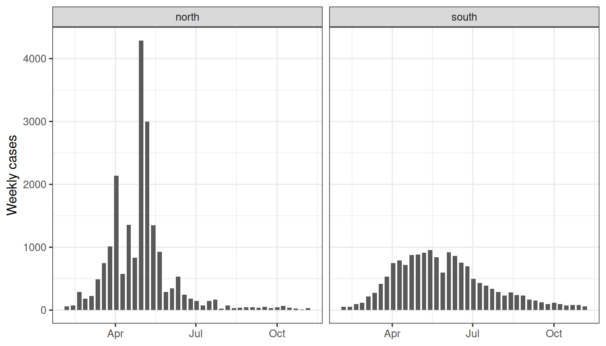
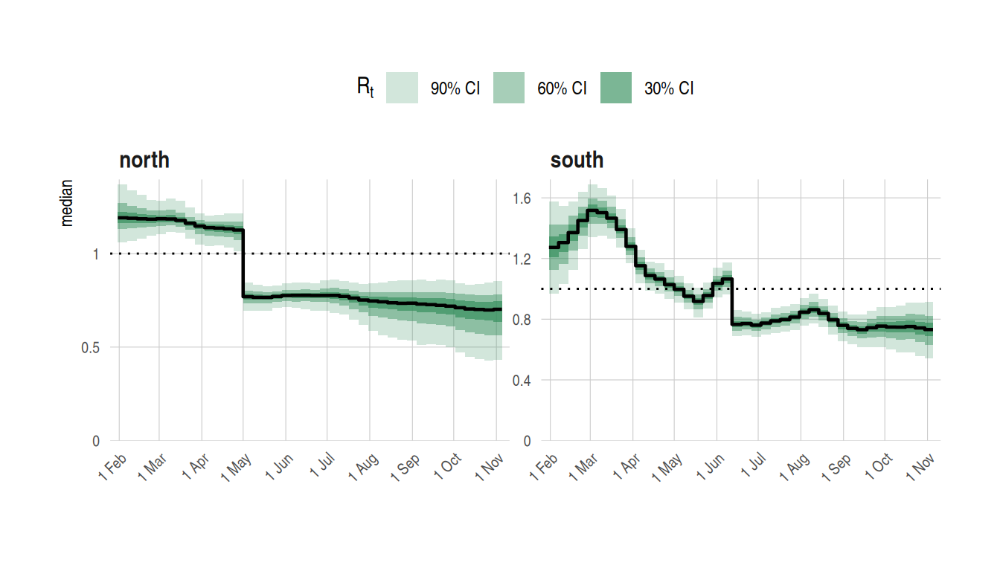
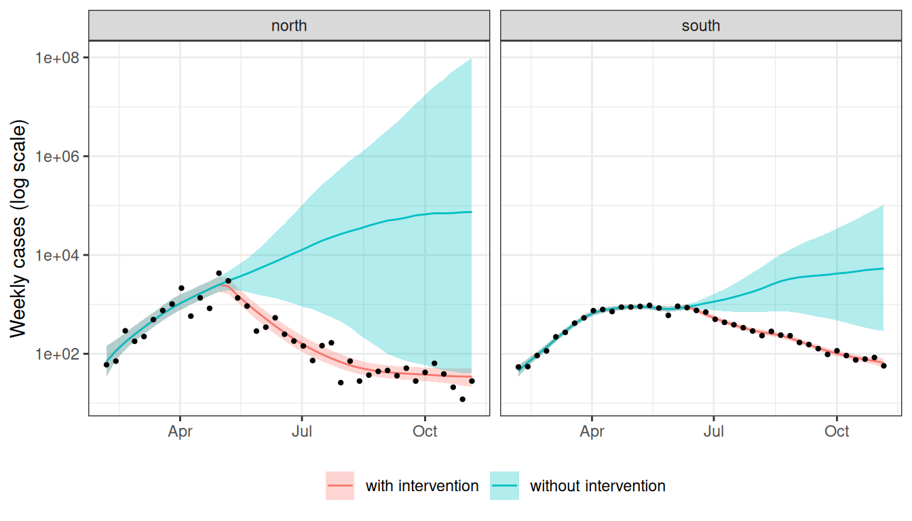

vignettes/weekly-counterfactuals.Rmd
weekly-counterfactuals.RmdThis article shows four model options added in epidemia 1.0.0.9000 and 1.0.0.9001, using simulated data:
gen and gen_group in epiinf());importations in epiinf());period in epiobs());aux_by_group in epiobs()).It then uses newdata to estimate what would have happened without an intervention: the reproduction number
and the expected cases with the intervention’s effect removed. The last section fits cases and deaths together,
with a known case fatality ratio and an unknown case reporting rate in each group, and estimates the deaths
averted.
library(epidemia)
options(mc.cores = parallel::detectCores())Two regions, north and south, report weekly case counts for 40 weeks. Transmission is faster in the north
(mean generation time 4 days) than in the south (mean 9 days). In both, \(R_t\) falls to 1 after a first wave, then an
intervention cuts it by 20%, from week 14 in the north and week 20 in the south. One infection a day arrives from
elsewhere. Every infection is assumed to
be reported, after a delay of 1 to 5 days. The weekly counts are noisier in the north: their negative binomial
reciprocal dispersion is 5 there and 50 in the south.
# gamma distributions on whole days, with a given mean and standard deviation
gamma_pmf <- function(mean, sd, n) discretize_cdf(pgamma, n, shape = (mean / sd)^2, rate = mean / sd^2)
gen <- list(fast = gamma_pmf(4, 3, 30), slow = gamma_pmf(9, 6, 30))
i2o <- c(0.1, 0.3, 0.3, 0.2, 0.1) # infection to reported case: lags of 1 to 5 days
i2d <- gamma_pmf(10, 5, 40) # infection to death, used later
weeks <- 40
seed_days <- 30
start <- as.Date("2024-01-01")
set.seed(12345)
simulate_region <- function(region, gen, R0, start_week, iota, size = 20, report = 1, cfr = NULL) {
days <- seed_days + 7 * weeks
week <- pmax(1, (seq_len(days) - seed_days - 1) %/% 7 + 1)
intervention <- as.numeric(week >= start_week)
# R falls from R0 to 1 over weeks 8 to 12, then the intervention cuts it by 20%
R <- exp(log(R0) * (1 - pmin(pmax(week - 8, 0) / 4, 1)) + log(0.8) * intervention)
inf <- c(rep(5, seed_days), numeric(days - seed_days))
for (t in (seed_days + 1):days) {
s <- seq_len(min(t - 1, length(gen)))
inf[t] <- R[t] * sum(inf[t - s] * gen[s]) + iota
}
# weekly totals of a share (rate) of infections, observed after a delay and dated at the
# end of each week, with negative binomial noise
ends <- seed_days + 7 * seq_len(weeks)
weekly <- function(delay, rate) {
daily <- sapply(seq_len(days), function(t) {
s <- seq_len(min(t - 1, length(delay)))
sum(inf[t - s] * delay[s])
})
y <- rep(NA, days)
y[ends] <- rnbinom(weeks, mu = rate * sapply(ends, function(e) sum(daily[(e - 6):e])), size = size)
y
}
out <- data.frame(region = region, date = start + seq_len(days) - 1, week = week,
intervention = intervention, cases = weekly(i2o, report), R = R)
if (!is.null(cfr))
out$deaths <- weekly(i2d, cfr)
out
}
data <- rbind(
simulate_region("north", gen$fast, R0 = 1.25, start_week = 14, iota = 1, size = 5),
simulate_region("south", gen$slow, R0 = 1.45, start_week = 20, iota = 1, size = 50)
)Each row of data is a day. The first 30 days of each region are a seeding period, before any cases are
reported. A weekly count sits on the last day of its week, and the observation is NA on the other days.
## region date week intervention cases R
## 37 north 2024-02-06 1 0 60 1.25
## 44 north 2024-02-13 2 0 71 1.25
## 51 north 2024-02-20 3 0 292 1.25
## 58 north 2024-02-27 4 0 179 1.25
## 65 north 2024-03-05 5 0 223 1.25
## 72 north 2024-03-12 6 0 492 1.25
\(R_t\) follows a weekly random walk in each region, with an intercept per region and an effect of the intervention shared by both. The walk has no drift, so the effect is identified by a step change in \(R_t\) when the intervention starts, consistent across regions. A trend already under way at that time would be partly credited to the intervention.
rt <- epirt(
formula = R(region, date) ~ 0 + region + intervention + rw(time = week, gr = region, prior_scale = 0.1),
prior = rstanarm::normal(0, 0.5),
link = "log"
)Each region has its own generation distribution. gen is a named list, and gen_group maps each region to one of
its elements; several groups can share one, for example all the counties of a state. A list named by group can be given
instead of gen_group. With importations = TRUE, each region also gets an unknown number of imported infections
every day after seeding, \(\iota\), which is added in the renewal equation:
\[
i_t = R_t \sum_{s < t} i_s g_{t-s} + \iota.
\]
Its prior is set by prior_importations, here a half-normal with scale 2, on the scale of daily infections.
inf <- epiinf(
gen = gen,
gen_group = c(north = "fast", south = "slow"),
seed_days = seed_days,
importations = TRUE,
prior_importations = rstanarm::normal(0, 2)
)The weekly counts use period = 7. The expected value of each count is then the sum of the expected daily cases over
the seven days ending on its date, and the negative binomial applies to the weekly total. All infections are reported
here, so the ascertainment rate is fixed at 1 using an offset and the identity link.
With aux_by_group = TRUE, each region has its own reciprocal dispersion \(\phi\), each with the prior prior_aux.
prior_aux_on = "inv_sqrt" puts that prior on \(1/\sqrt{\phi}\): here a half-normal(0, 1), which allows strong
overdispersion. The default prior, normal(10, 5) on \(\phi\) itself, would keep \(\phi\) at 10 or more.
fm <- epim(rt = rt, inf = inf, obs = obs, data = data, iter = 1000, chains = 4,
seed = 12345, refresh = 0, control = list(adapt_delta = 0.95))The intervention effect, the importations and the dispersions, with 95% credible intervals:
pars <- c("R|intervention", "importations[north]", "importations[south]",
"cases|reciprocal dispersion[north]", "cases|reciprocal dispersion[south]")
round(t(apply(as.matrix(fm)[, pars], 2, quantile, c(0.5, 0.025, 0.975))), 2)##
## parameters 50% 2.5% 97.5%
## R|intervention -0.37 -0.52 -0.18
## importations[north] 1.48 0.56 2.99
## importations[south] 1.65 0.12 3.87
## cases|reciprocal dispersion[north] 4.56 2.76 7.18
## cases|reciprocal dispersion[south] 102.66 48.12 221.41The simulated values, \(\log 0.8 \approx -0.22\), one infection a day, and reciprocal dispersions of 5 and 50, are inside the intervals.
plot_rt(fm, step = TRUE, date_breaks = "1 month")
To estimate what would have happened without the intervention, set it to zero in newdata and simulate from the
posterior again. Everything else, including the random walks, the seeds and the importations, stays at its
posterior draws, so the difference is the intervention’s effect alone.
nodata <- data
nodata$intervention <- 0
R_with <- posterior_rt(fm)
R_without <- posterior_rt(fm, newdata = nodata)
# expected weekly cases, with and without the intervention
mu_with <- posterior_predict(fm, posterior_mean = TRUE)
mu_without <- posterior_predict(fm, newdata = nodata, posterior_mean = TRUE)posterior_rt() with newdata gives \(R_t\) with the covariate term removed, and posterior_predict() with
posterior_mean = TRUE gives the expected weekly counts rather than draws of the counts.
Leave out posterior_mean = TRUE to include the negative binomial noise.
summarise <- function(x, what) {
data.frame(region = x$group, date = x$time, what = what,
median = apply(x$draws, 2, median),
lo = apply(x$draws, 2, quantile, 0.025),
hi = apply(x$draws, 2, quantile, 0.975))
}
cf <- rbind(summarise(mu_with, "with intervention"), summarise(mu_without, "without intervention"))
ggplot(cf, aes(date, median, colour = what, fill = what)) +
geom_ribbon(aes(ymin = lo, ymax = hi), alpha = 0.3, colour = NA) +
geom_line() +
geom_point(data = data[!is.na(data$cases), ], aes(date, cases), inherit.aes = FALSE, size = 0.8) +
facet_wrap(~region) +
scale_y_log10() +
labs(x = NULL, y = "Weekly cases (log scale)", colour = NULL, fill = NULL) +
theme_bw() + theme(legend.position = "bottom")
Without the intervention, \(R_t\) would have stayed close to 1, so a small error in its estimated effect compounds week after week, and the expected cases without it become very uncertain the further they are from its start. The cases averted are therefore summarised over the eight weeks after the intervention started in each region, with 95% credible intervals:
starts <- c(north = 14, south = 20)
week <- data$week[match(paste(mu_with$group, mu_with$time), paste(data$region, data$date))]
averted <- mu_without$draws - mu_with$draws
t(sapply(names(starts), function(g) {
i <- mu_with$group == g & week >= starts[g] & week < starts[g] + 8
quantile(rowSums(averted[, i, drop = FALSE]), c(0.5, 0.025, 0.975))
}))## 50% 2.5% 97.5%
## north 41958.732 6522.080 178494.00
## south 7713.417 2298.953 18403.03Case reporting often differs between places, so the ratio of deaths to reported cases can vary much more than the case fatality ratio (CFR) itself. If deaths are fully reported and the CFR is known, deaths fix the scale of infections, and the reporting rate of cases in each group can be estimated against them.
The two regions are simulated again, now with 30% of cases reported in the north and 60% in the south, and with deaths, on average 10 days after infection, for a CFR of 1.5% in both. The reciprocal dispersion is 20 everywhere, and the model below has one for each observation type, the default. There are then about 5 deaths per 100 reported cases in the north and 2.5 in the south.
data2 <- rbind(
simulate_region("north", gen$fast, R0 = 1.25, start_week = 14, iota = 1, report = 0.3, cfr = 0.015),
simulate_region("south", gen$slow, R0 = 1.45, start_week = 20, iota = 1, report = 0.6, cfr = 0.015)
)
data2$cfr <- 0.015
# deaths per reported case
with(data2, tapply(deaths, region, sum, na.rm = TRUE) / tapply(cases, region, sum, na.rm = TRUE))## north south
## 0.04530802 0.02633102Deaths have their ascertainment fixed at the CFR: an offset, here the column cfr (which could differ by region or
date), with the identity link and no other terms. Cases have a reporting rate for each region, on the logit scale,
with a normal(0, 1.5) prior. Both are weekly totals.
cases <- epiobs(cases ~ 0 + region, i2o = i2o, link = "logit", period = 7,
prior = rstanarm::normal(0, 1.5))
deaths <- epiobs(deaths ~ 0 + offset(cfr), i2o = i2d, link = "identity", period = 7)
fm2 <- epim(rt = rt, inf = inf, obs = list(cases, deaths), data = data2, iter = 1000, chains = 4,
seed = 12345, refresh = 0, control = list(adapt_delta = 0.95))The estimated reporting rates, with 95% credible intervals (simulated: 0.3 in the north and 0.6 in the south):
rho <- plogis(as.matrix(fm2)[, c("cases|regionnorth", "cases|regionsouth")])
round(t(apply(rho, 2, quantile, c(0.5, 0.025, 0.975))), 2)##
## parameters 50% 2.5% 97.5%
## cases|regionnorth 0.33 0.27 0.4
## cases|regionsouth 0.59 0.50 0.7With several observation types, posterior_predict() returns a list with an element for each, so one counterfactual
gives both the deaths and the reported cases averted. Dividing reported cases by the reporting rate would give all
cases.
nodata2 <- data2
nodata2$intervention <- 0
mu2 <- posterior_predict(fm2, posterior_mean = TRUE)
mu2_without <- posterior_predict(fm2, newdata = nodata2, posterior_mean = TRUE)
names(mu2)## [1] "cases" "deaths"
# deaths averted in the eight weeks after the intervention started
week2 <- data2$week[match(paste(mu2$deaths$group, mu2$deaths$time), paste(data2$region, data2$date))]
deaths_averted <- mu2_without$deaths$draws - mu2$deaths$draws
t(sapply(names(starts), function(g) {
i <- mu2$deaths$group == g & week2 >= starts[g] & week2 < starts[g] + 8
quantile(rowSums(deaths_averted[, i, drop = FALSE]), c(0.5, 0.025, 0.975))
}))## 50% 2.5% 97.5%
## north 137.75482 5.495453 579.8297
## south 46.66315 2.887615 128.9206These intervals are wide for the same reason as the cases averted: a small error in the estimated effect compounds week after week. The effect itself, with its 95% credible interval (simulated: \(\log 0.8 \approx -0.22\)):
## 50% 2.5% 97.5%
## -0.23 -0.41 -0.02